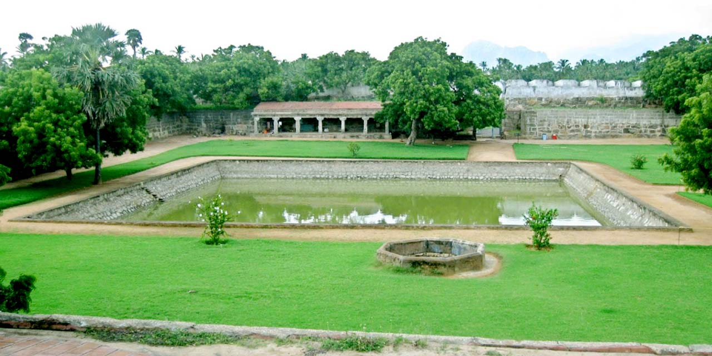

Thiruvalluvar Statue
The Thiruvalluvar Statue in Kanyakumari stands as a testament to wisdom and resilience, attracting tourists with its sheer grandeur and symbolism. Legend says that when construction began, the ocean tested its strength with storms, yet it stood firm, much like Thiruvalluvar’s teachings. The statue, towering at 133 feet to represent the *Tirukkural’s* 133 chapters, famously withstood the 2004 tsunami, reinforcing its image as a symbol of endurance. Visitors take a ferry to the island, marveling at the statue’s serene presence amidst the roaring seas, where the poet’s wisdom seems to echo in the wind, offering an experience of peace and reflection.
Read More

Vivekananda Rock Memorial
The Vivekananda Rock Memorial in Kanyakumari is a place of spiritual significance, attracting visitors with its mystical aura and breathtaking location. According to legend, Swami Vivekananda meditated on this rock in 1892, seeking divine enlightenment before introducing Hindu philosophy to the world. Surrounded by the confluence of three mighty oceans, the memorial stands as a tribute to his vision and strength. Tourists take a ferry to reach this sacred spot, where the rhythmic waves and serene atmosphere create a sense of tranquility, making it not just a monument but a place for deep introspection and inspiration.
Read More

Vattakottai Fort (Circular Fort)
Vattakottai Fort, a historic seaside fortress near Kanyakumari, attracts visitors with its unique circular structure and breathtaking ocean views. Built in the 18th century by the Travancore kingdom, it served as a coastal defense post, with its granite walls standing strong against time. Legend says that a secret tunnel once connected the fort to Padmanabhapuram Palace, adding a sense of mystery. Today, tourists visit to admire its blend of history and nature, walking along its ramparts while enjoying panoramic views of the Arabian Sea on one side and the majestic Western Ghats on the other, making it a perfect spot for history lovers and nature enthusiasts alike.
Read More

Padmanabhapuram Palace
Padmanabhapuram Palace, a stunning wooden palace near Kanyakumari, captivates visitors with its intricate Kerala-style architecture and royal history. Built in the 16th century by the Travancore rulers, it once served as their capital and is famed for its elaborate rosewood carvings, secret underground passages, and vast Durbar Hall with a black granite floor polished with a unique herbal mix. Legend says the palace was divinely blessed, ensuring its survival through centuries. Surrounded by lush hills and ancient charm, it offers tourists a glimpse into a bygone era of art, culture, and regal grandeur, making it a must-visit historical treasure.
Read More